[eng] Tutorial on sequence analysis
Nicolas Robette
2023-04-02
Tutorial.RmdPreliminary steps
Start by loading the necessary packages (which must be installed
beforehand if they are not already installed) : TraMineR and TraMineRextras
for sequence analysis, cluster and WeightedCluster for clustering, FactoMineR et ade4 for
correspondence analysis, RColorBrewer for color
palettes, questionr et descriptio for descriptive statistics, dplyr et purrr for data
manipulation, ggplot2 for plots and seqhandbook which accompanies the handbook.
library(TraMineR)
library(TraMineRextras)
library(cluster)
library(WeightedCluster)
library(FactoMineR)
library(ade4)
library(RColorBrewer)
library(questionr)
library(descriptio)
library(dplyr)
library(purrr)
library(ggplot2)
library(seqhandbook)The data used in the handbook is then loaded. The data on employment
trajectories are in the data frame trajact: there are 500
observations, i.e. 500 individual trajectories, and 37 variables,
corresponding to the activity status observed each year between the ages
of 14 and 50.
'data.frame': 500 obs. of 37 variables:
$ sact14: num 2 1 1 1 1 1 1 1 1 1 ...
$ sact15: num 2 1 1 1 1 1 1 1 1 1 ...
$ sact16: num 2 1 1 1 1 1 1 1 1 1 ...
$ sact17: num 2 1 1 1 1 1 2 2 2 2 ...
$ sact18: num 2 1 2 2 1 1 2 2 2 2 ...
$ sact19: num 2 3 2 2 1 1 2 2 2 2 ...
$ sact20: num 2 3 2 6 2 2 5 2 6 2 ...
$ sact21: num 2 3 2 2 2 2 5 6 6 2 ...
$ sact22: num 2 3 2 2 2 2 5 6 2 2 ...
$ sact23: num 2 3 2 2 2 2 5 2 2 2 ...
$ sact24: num 2 3 2 2 2 5 3 2 2 2 ...
$ sact25: num 2 3 2 2 2 5 3 2 2 2 ...
$ sact26: num 2 3 2 2 2 5 3 2 2 2 ...
$ sact27: num 2 3 2 2 2 2 3 2 2 2 ...
$ sact28: num 2 3 5 2 2 2 3 2 2 2 ...
$ sact29: num 2 3 2 2 2 2 3 2 2 2 ...
$ sact30: num 2 3 5 2 2 2 3 2 2 2 ...
$ sact31: num 2 3 5 2 2 2 3 2 2 2 ...
$ sact32: num 2 3 5 2 2 2 5 2 2 2 ...
$ sact33: num 2 3 5 2 2 2 5 2 2 2 ...
$ sact34: num 2 3 5 2 2 2 5 2 2 2 ...
$ sact35: num 2 3 5 2 2 2 2 2 2 2 ...
$ sact36: num 2 3 5 2 2 2 2 2 2 2 ...
$ sact37: num 2 3 5 2 2 2 2 2 2 2 ...
$ sact38: num 2 2 5 2 2 2 2 2 2 2 ...
$ sact39: num 2 2 5 2 2 2 2 2 2 2 ...
$ sact40: num 2 2 5 2 2 2 2 2 2 2 ...
$ sact41: num 2 2 5 2 2 2 2 2 2 2 ...
$ sact42: num 2 2 5 2 2 2 2 2 2 2 ...
$ sact43: num 2 2 5 2 2 2 2 2 2 2 ...
$ sact44: num 2 2 5 2 2 2 2 2 2 2 ...
$ sact45: num 2 2 3 2 2 2 2 2 2 2 ...
$ sact46: num 2 2 3 2 2 2 2 2 2 2 ...
$ sact47: num 2 2 3 2 2 2 2 2 2 2 ...
$ sact48: num 2 2 3 2 2 2 2 2 2 2 ...
$ sact49: num 2 2 3 2 2 2 2 2 2 2 ...
$ sact50: num 2 3 3 2 2 2 2 2 2 2 ...The first step in sequence analysis is to create a corpus of
sequences, i.e. a stslist class object using the
seqdef function. First the labels of the 6 states and a
palette of 6 colours are defined (this is optional: seqdef
creates labels and palette automatically if not provided).
# defining of a corpus of sequences
labs <- c("studies","full-time","part-time","short jobs","inactivity","military")
palette <- brewer.pal(length(labs), 'Set2')
seqact <- seqdef(trajact, labels=labs, cpal=palette)Our corpus of 500 sequences consists of 377 distinct sequences, which confirms the interest of using a statistical procedure to group together sequences that are similar.
[1] 377The state distribution plot of all the sequences shows the preponderance of full-time employment and the non-negligible weight of inactivity.
# state distribution plot
seqdplot(seqact, xtlab=14:50, cex.legend=0.7)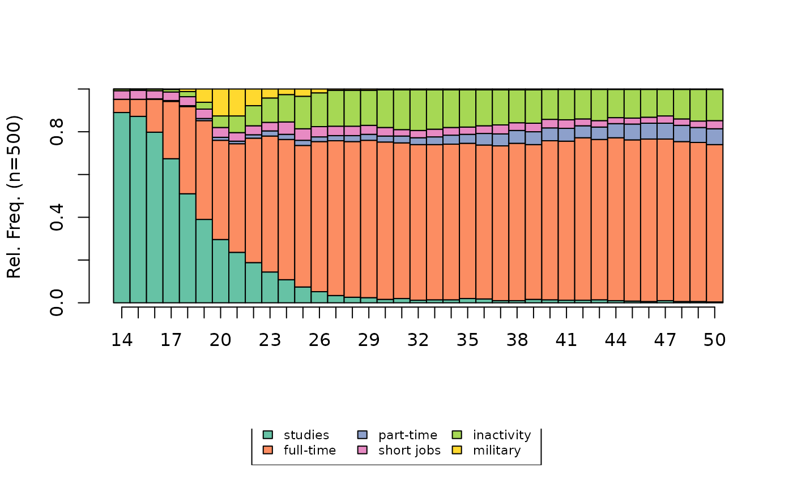
A data frame is also loaded containing some socio-demographic
variables on the individuals. Note that the categorical variables are in
factor format.
'data.frame': 500 obs. of 9 variables:
$ annais : num 1950 1937 1933 1948 1944 ...
$ nbenf : Factor w/ 4 levels "aucun","un","deux",..: 4 3 3 3 3 2 4 4 4 1 ...
$ nbunion : Factor w/ 3 levels "aucune","une",..: 2 2 2 2 3 2 2 2 2 1 ...
$ mereactive : Factor w/ 2 levels "non","oui": 1 1 2 2 1 1 2 1 1 2 ...
$ sexe : Factor w/ 2 levels "homme","femme": 1 2 2 1 2 2 2 1 1 2 ...
$ PCS : Factor w/ 8 levels "NA","agric","indep",..: 7 8 5 7 6 5 6 7 7 4 ...
$ PCSpere : Factor w/ 8 levels "agric","indep",..: 7 1 5 2 6 3 6 5 6 6 ...
$ diplome : Factor w/ 4 levels "aucun","<bac",..: 1 2 2 2 3 4 2 2 2 2 ...
$ nationalite: Factor w/ 2 levels "francaise","etrangere": 1 1 1 1 1 1 1 1 1 1 ...Building a distance matrix
Synthetic indicators
As an example, a distance matrix is constructed from indicators describing the number of episodes in the different states. The first individual has spent his entire trajectory in full-time employment, while the second has experienced one full-time episode but also one episode of study and two of part-time employment.
nepi1 nepi2 nepi3 nepi4 nepi5 nepi6
1 0 1 0 0 0 0
2 1 1 2 0 0 0
3 1 2 1 0 2 0
4 1 2 0 0 0 1
5 1 1 0 0 0 0
6 1 2 0 0 1 0The matrix can be calculated directly from the indicators or after a Principal Component Analysis (PCA) step, here by retaining the first 5 dimensions.
# distance matrix from the indicator
dissim <- dist(indics, method='euclidean') %>% as.matrix
# distance matrix from PCA results
acp_coords <- PCA(indics, scale.unit=FALSE, ncp=5, graph=FALSE)$ind$coord
dissim <- dist(acp_coords, method='euclidean') %>% as.matrixOther synthetic indicators (durations, states visited, etc.) can be
calculated simply from the functions seqistatd,
seqi1epi, seqifpos, seqindic or
seqpropclust.
Disjunctive coding and QHA
In the case of complete disjunctive coding, the distance matrix can be calculated directly, with the Euclidean distance or the chi2 distance, or after a Principal Component Analysis (PCA) or Multiple Correspondence Analysis (MCA) step, here by retaining the first 5 dimensions.
NB: map_df allows you to apply the same function to all
the columns of a data frame. Here, this function is used to convert
columns from numerical format to factor format.
# complete disjunctive coding
disjo <- as.data.frame(tab.disjonctif(seqact))
disjo <- disjo[,colSums(disjo)>0]
# euclidian distance
dissim <- dist(disjo, method='euclidean') %>% as.matrix
# chi2 distance
dissim <- map_df(disjo, as.factor) %>%
dudi.acm(scannf=FALSE, nf=ncol(disjo)) %>%
dist.dudi() %>%
as.matrix
# after a PCA step
acp_coords <- PCA(disjo, scale.unit=FALSE, ncp=5, graph=FALSE)$ind$coord
dissim <- dist(acp_coords, method='euclidean') %>% as.matrix
# after a MCA step
acm_res <- purrr::map_df(disjo, as.factor) %>%
MCA(ncp=5, graph=FALSE)
dissim <- dist(acm_res$ind$coord, method='euclidean') %>% as.matrixFor the qualitative harmonic analysis (QHA), the calculation of the distance matrix can be done directly (chi2 distance) or after a correspondence analysis (CA), here using the first 5 dimensions.
# QHA coding
ahq <- seq2qha(seqact, c(1,3,7,10,15,20,28))
ahq <- ahq[,colSums(ahq)>0]
# chi2 distance
dissim <- dudi.coa(ahq, scannf=FALSE, nf=ncol(ahq)) %>%
dist.dudi() %>%
as.matrix
# after a CA step
afc_coord <- CA(ahq, ncp=5, graph=FALSE)$row$coord
dissim <- dist(afc_coord, method='euclidean') %>% as.matrixOptimal Matching and alternatives
For Optimal Matching, the construction of a distance matrix
between sequences is done with the seqdist function. This
also involves defining a substitution cost matrix between states (with
the seqsubm function). Here the substitution costs are
constant and equal to 2 and the indel cost is equal to 1.5.
# building the distance matrix
couts <- seqsubm(seqact, method="CONSTANT", cval=2)
dissim <- seqdist(seqact, method="OM", sm=couts, indel=1.5)From experience, Optimal Matching with the parameters
adopted here is a choice that allows the different dimensions of
sequence temporality to be taken into account - sequencing,
calendar (timing), duration (in different states or episodes,
duration and spell duration). If you wish to focus on
one of these dimensions, you can follow the recommendations of Studer
& Ritschard (2016, see in particular pages 507-509), and choose one
of the many other metrics implemented in the TraMineR
extension.
# sequencing
dissim <- seqdist(seqact, method="OMstran", otto=0.1, sm=couts, indel=1)
dissim <- seqdist(seqact, method="OMspell", expcost=0, sm=couts, indel=1)
dissim <- seqdist(seqact, method="SVRspell", tpow=0)
# timing
dissim <- seqdist(seqact, method="HAM", sm=couts)
dissim <- seqdist(seqact, method="CHI2", step=1)
# duration (distribution aver the entire period)
dissim <- seqdist(seqact, method="EUCLID", step=37)
# duration (spell lengths)
dissim <- seqdist(seqact, method="OMspell", expcost=1, sm=couts, indel=1)
dissim <- seqdist(seqact, method="LCS")Note that methods using the complete disjunctive coding or QHA are
also implemented in the seqdist function (“EUCLID” and
“CHI2” methods).
Typology of sequences
Building a typology
A hierarchical agglomerative clustering (HAC) is then carried out
using Ward’s aggregation criterion, using the agnes
function of the cluster extension.
NB: With a high number of sequences, HAC may require a significant
amount of computing time. However, there is a much faster implementation
in the fastcluster package (hclust
function).
# hierarchical agglomerative clustering
agnes <- as.dist(dissim) %>% agnes(method="ward", keep.diss=FALSE)In order to explore the solutions of a hierarchical agglomerative clustering, one usually starts by examining the dendrogram.
# dendrogram
as.dendrogram(agnes) %>% plot(leaflab="none")The following graph combines dendrogram and index plot: the sequences of the index plot index are sorted according to their position in the dendrogram, which is shown in the margin of the graph.
# heatmap (dendrogram + index plot)
seq_heatmap(seqact, agnes)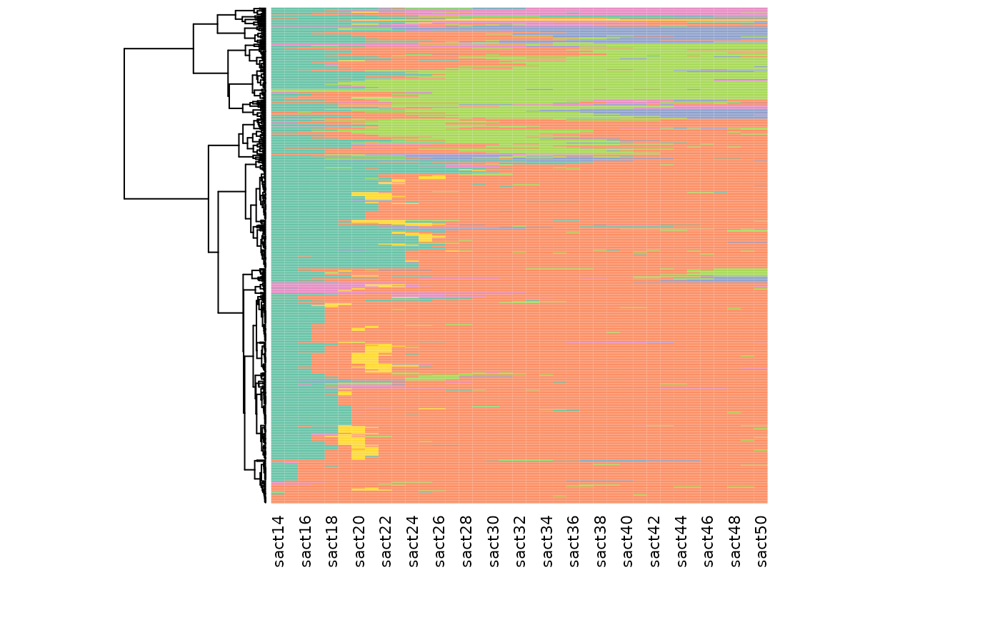
Examination of inertia gaps can also be useful in determining the number of clusters in the typology. For example, it can be seen that there is a noticeable difference in inertia between partitions in 5 and 6 clusters.
# plot of inertia
plot(sort(agnes$height, decreasing=TRUE)[1:20], type="s", xlab="number of clusters", ylab="inertia")There are also a number of indicators of partition quality (silhouette, Calinski-Harabasz, pseudo-R2, etc.; see Studer, 2013).
# indicators of quality
wardRange <- as.clustrange(agnes, diss=dissim)
summary(wardRange, max.rank=2) 1. N groups 1. stat 2. N groups 2. stat
PBC 5 0.79612318 4 0.79012613
HG 5 0.92899997 4 0.92259604
HGSD 5 0.92672338 4 0.92027518
ASW 3 0.53491169 2 0.52958820
ASWw 3 0.53862662 2 0.53182999
CH 2 156.86409716 3 103.74539004
R2 20 0.60648740 19 0.59473652
CHsq 2 324.53910100 3 245.89231855
R2sq 20 0.82862437 19 0.82073439
HC 5 0.04010082 4 0.04392402The quality of the partitions for different numbers of clusters for the silhouette, pseudo-R2 and Calinski-Harabasz indicators is shown graphically here.
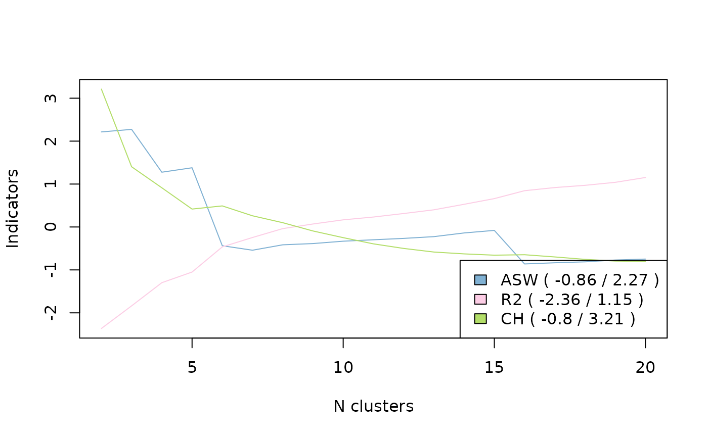
In the end, we opt for a partition in 5 clusters, by “cutting the
tree” of the HAC using the cutree function.
# choosing the partition in 5 clusters
nbcl <- 5
part <- cutree(agnes, nbcl)It is possible to “consolidate” the partition using the PAM algorithm
(Partition Around Medoids) and the wcKMedoids
function of the WeightedCluster package. This results in a
very similar distribution of sequences between the clusters (see the
table crossing the clusters before and after consolidation) but the
quality of the consolidated partition is slightly higher (the R² goes
from 61 to 64%).
# consolidating the partition
newpart <- wcKMedoids(dissim, k=nbcl, initialclust=part, cluster.only=TRUE)
table(part, newpart) newpart
part 28 34 103 307 480
1 104 241 1 0 0
2 9 24 2 7 0
3 0 6 6 63 1
4 0 0 17 0 0
5 8 0 0 1 10
wcClusterQuality(dissim, part)$stats['R2sq'] %>% round(3) R2sq
0.607
wcClusterQuality(dissim, newpart)$stats['R2sq'] %>% round(3)R2sq
0.64 If you wish to keep the consolidated partition :
part <- as.numeric(as.factor(newpart))NB: Another option, the “fuzzy” clustering, here with the Fanny
algorithm (extension cluster). Unlike HAC or PAM, each
sequence does not belong to a single cluster but is characterised by
degrees of membership to the different clusters. The following table
presents the degrees of membership to the 6 clusters of the first 3
sequences of the corpus. The first sequence belongs 99% to cluster 1,
but the second is more “balanced”, mainly between clusters 2 and 5.
# fuzzy clustering
fanny <- as.dist(dissim) %>% fanny(k=5, metric='euclidean', memb.exp=1.2)
fanny$membership %>% round(2) %>% .[1:3,] [,1] [,2] [,3] [,4] [,5]
1 0.99 0.00 0.00 0.01 0.00
2 0.06 0.51 0.02 0.13 0.28
3 0.00 0.11 0.80 0.00 0.08Describing the typology: plots
The graphical representations give a quick and intuitive idea of the nature of the clusters in the typology. The most commonly used type of graph is the state distribution plot.
# state distribution plots of the typology
seqdplot(seqact, group=part, xtlab=14:50, border=NA, cex.legend=0.8)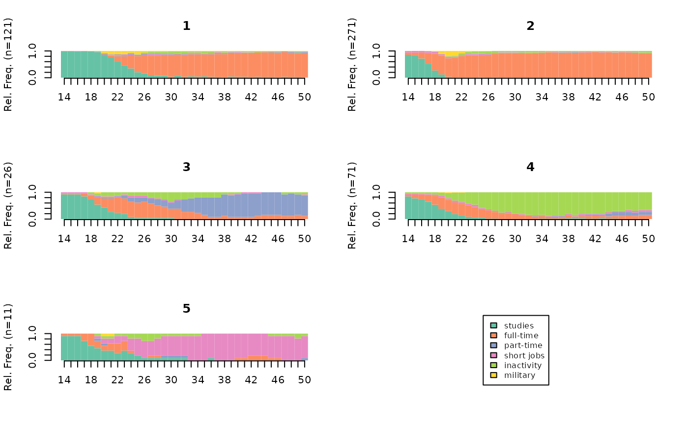
The index plots are also very common.
# index plots of the typology
seqIplot(seqact, group=part, xtlab=14:50, yaxis=FALSE, cex.legend=0.8)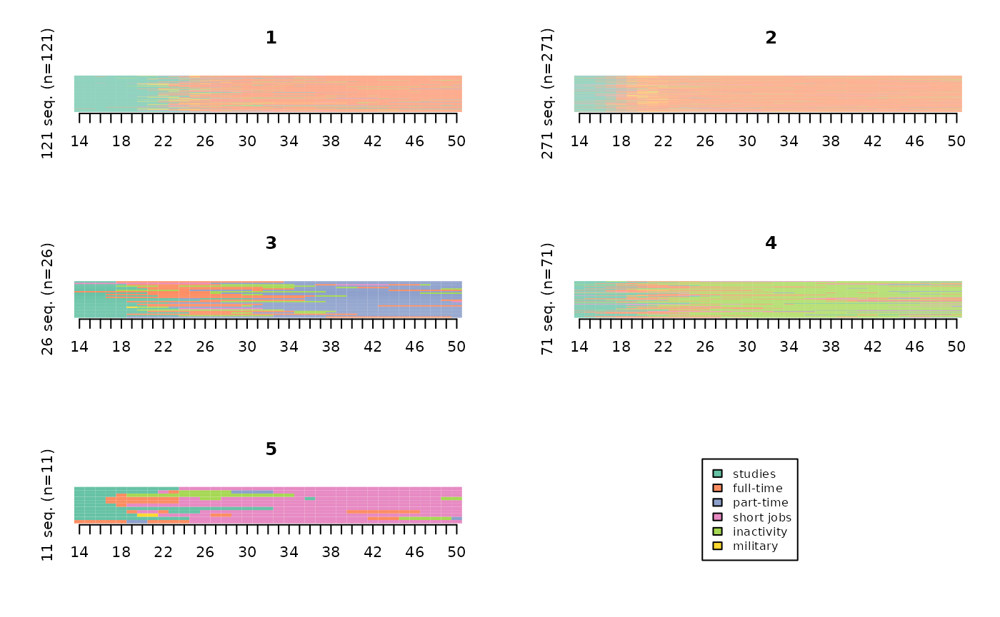
The index plots are often easier to interpret when sorting sequences, especially from a multidimensional scaling procedure.
# index plots of the typology, sorted by multidimensional scaling
mds.order <- cmdscale(dissim,k=1)
seqIplot(seqact, sortv=mds.order, group=part, xtlab=14:50, yaxis=FALSE, cex.legend=0.8)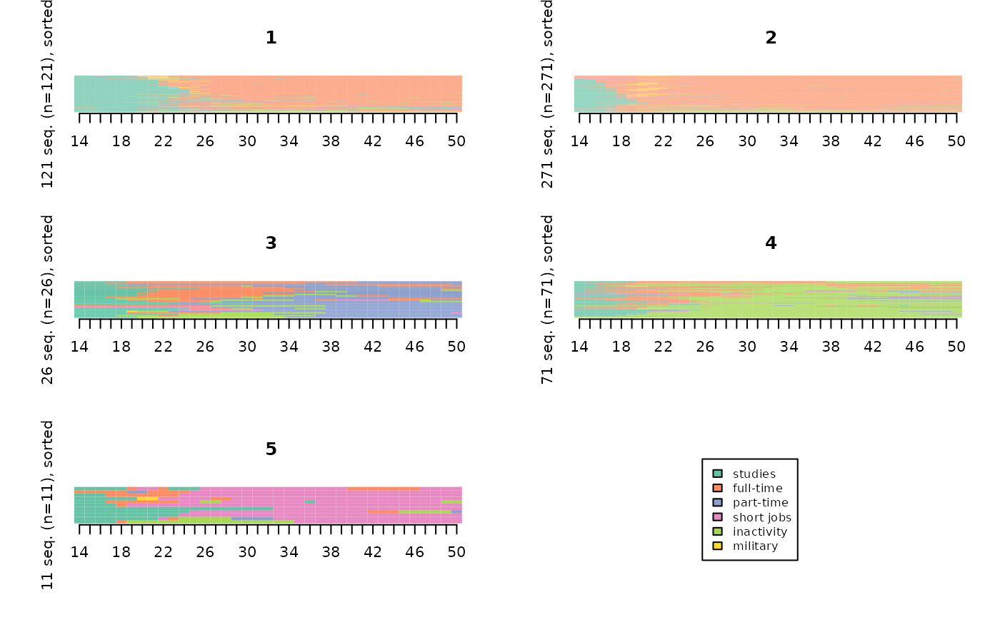
They can also be “smoothed” to make them more legible.
“smoothed MDS sequence plots” method (Piccarreta, 2012):
smoothed <- seqsmooth(seqact, dissim, k=30)$seqdata
seqIplot(smoothed, sortv=mds.order, group=part, xtlab=14:50, yaxis=FALSE, cex.legend=0.8)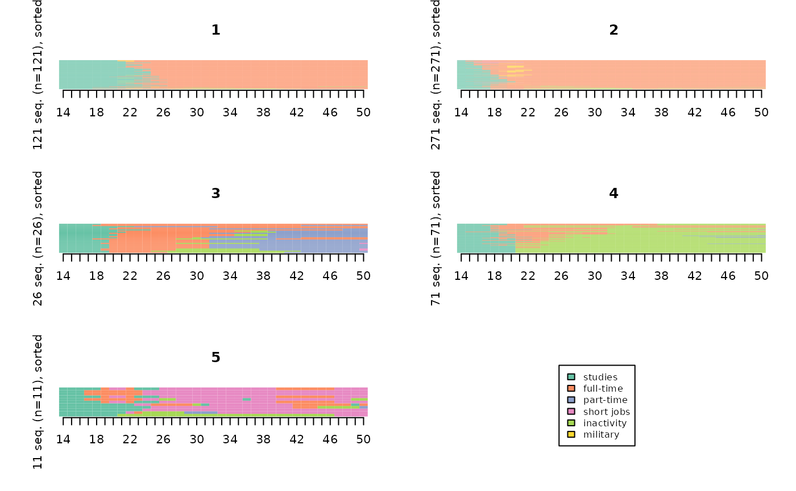
“relative frequency sequence plots” method (Fasang & Liao, 2013):
# relative frequency sequence plots
seqplot.rf(seqact, diss=dissim, group=part, xtlab=14:50, which.plot="medoids")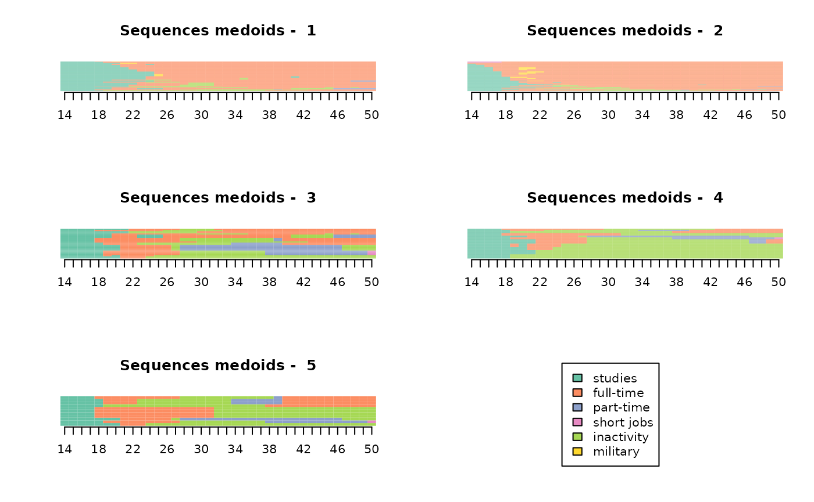
The sequence frequency plots represent, for each cluster, the 10 most frequent sequences (with a thickness proportional to their frequency).
# frequency plots
seqfplot(seqact, group=part, ylab="", xtlab=14:50, cex.legend=0.8)
The modal state sequence plots represent, for each cluster, the sequence of modal states for each position in time. At each position in time, the height of the bar is proportional to the frequency of the modal state.
# modal state plots
seqmsplot(seqact, group=part, xtlab=14:50, cex.legend=0.8)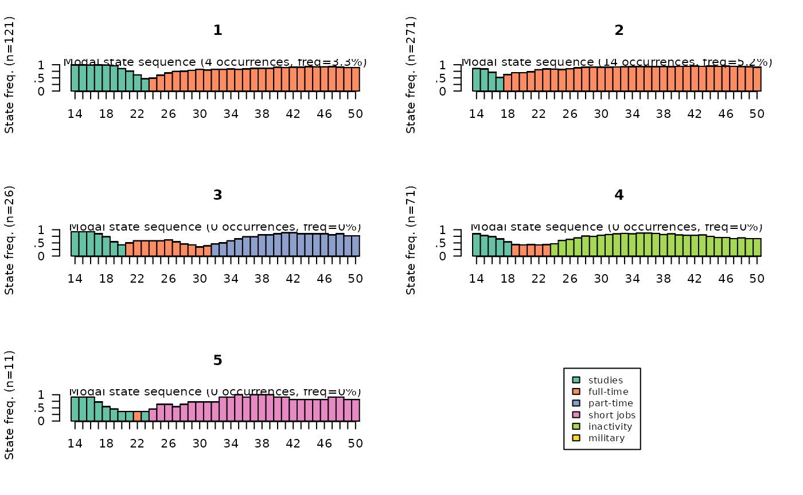
Describing the typology: descriptive statistics
The first step in the statistical description of the typology is usually to present the weight of the clusters. Cluster 2 comprises more than half of the individuals, while clusters 3 and 5 are very small.
# weights and percentages
freq(part) n % val%
1 121 24.2 24.2
2 271 54.2 54.2
3 26 5.2 5.2
4 71 14.2 14.2
5 11 2.2 2.2It is useful to assess the homogeneity of clusters. This can be done on the basis of intra-cluster distances. Clusters 1 and 2 are the most homogeneous.
# intra-cluster distances
Dintra <- integer(length=nbcl)
for(i in 1:nbcl) Dintra[i] <- round(mean(dissim[part==i,part==i]),1)
Dintra[1] 18.3 15.2 30.2 28.4 24.3The results are convergent based on average distances to cluster centres:
# average distances to cluster centres
dissassoc(dissim, part)$groups n discrepancy
1 121 9.171231
2 271 7.617135
3 26 15.078402
4 71 14.208490
5 11 12.173554
Total 500 15.876208The same applies to transversal entropy:
# average transversal entropy per cluster
entropie <- vector()
for(i in 1:nbcl) entropie[i] <- round(mean(seqstatd(seqact[part==i,])$Entropy),2)
entropie[1] 0.33 0.27 0.47 0.46 0.36To give a more detailed view of the shape of the trajectories of each cluster, synthetic indicators are calculated and then averaged according to the cluster of the typology. The time spent in the states :
# time spent in the states per cluster
dur <- seqistatd(seqact)
durees <- round(aggregate(dur, by=list(part), FUN=mean), 1)
rownames(durees) <- NULL
durees Group.1 1 2 3 4 5 6
1 1 10.2 23.1 0.7 0.7 1.3 1.0
2 2 3.5 29.9 0.4 0.9 1.7 0.6
3 3 6.3 9.2 16.4 1.0 4.0 0.0
4 4 5.0 7.1 1.2 1.6 22.0 0.1
5 5 7.0 3.6 0.6 22.8 2.7 0.2The share of individuals having experienced at least one episode in the states :
# at least one episode in the states, per cluster
epi <- seqi1epi(seqact)
episodes <- round(aggregate(epi, by=list(part), FUN=mean), 2)
rownames(episodes) <- NULL
episodes Group.1 epi1 epi2 epi3 epi4 epi5 epi6
1 1 1.00 0.99 0.16 0.14 0.32 0.36
2 2 0.86 1.00 0.06 0.17 0.31 0.35
3 3 0.92 0.73 1.00 0.15 0.62 0.04
4 4 0.86 0.75 0.24 0.24 1.00 0.03
5 5 0.91 0.82 0.27 1.00 0.36 0.09Ensuite, on croise la typologie avec les caractéristiques des individus. On commence par une analyse bivariée du type de trajectoire selon le sexe. Le V² de Cramer est de 0,16, indiquant une association notable. Les femmes sont très sur-représentées dans la classe 4 et secondairement dans la classe 3, alors que les hommes sont sur-représentés dans les classes 1 et 2 (les valeurs “phi” correspondent aux attractions ou répulsions entre modalités).
Next, the typology is cross-tabulated with the characteristics of the individuals. We begin with a bivariate analysis of the type of trajectory according to gender. Cramer’s V² is 0.40, indicating a significant association. Women are highly over-represented in cluster 4 and secondarily in cluster 3, while men are over-represented in clusters 1 and 2 (the “phi” values correspond to attractions or repulsions between categories).
NB: The two objects part and socdem must
not have been sorted. If this is nevertheless the case, they must be
merged from a common identifier, or re-sorted according to the initial
order.
asso <- assoc.twocat(factor(part), socdem$sexe)
asso$global$cramer.v[1] 0.401948
asso$local$phi homme femme
1 0.16239591 -0.16239591
2 0.18154113 -0.18154113
3 -0.17650554 0.17650554
4 -0.33493171 0.33493171
5 -0.02662907 0.02662907The over-representations for each cluster in the typology are then
examined on the basis of all the individual characteristics present in
the socdem data frame. First of all, it can be seen that
only three variables do not seem to be significantly related to the type
of trajectory (mereactive, nbunion, nationality). To take just the
example of cluster 4, we see that women are over-represented there, as
well as individuals with three or more children, without a diploma or
with unknown PCS (which is certainly not unrelated to inactivity).
$variables
variable measure association
1 sexe Cramer V 0.402
2 PCS Cramer V 0.362
3 diplome Cramer V 0.330
4 PCSpere Cramer V 0.202
5 nbenf Cramer V 0.146
6 mereactive Cramer V 0.130
7 nbunion Cramer V 0.094
8 nationalite Cramer V 0.057
9 annais Eta2 0.041
$bylevel
$bylevel$`1`
$bylevel$`1`$categories
categories pct.ycat.in.xcat pct.xcat.in.ycat pct.xcat.global phi
1 diplome.>bac 0.598 0.628 0.254 0.486
3 PCS.pcis 0.579 0.512 0.214 0.411
7 PCSpere.pcis 0.519 0.331 0.154 0.276
12 sexe.homme 0.319 0.595 0.452 0.162
16 nbenf.aucun 0.367 0.182 0.120 0.107
19 diplome.bac 0.342 0.223 0.158 0.101
21 PCS.oqual 0.098 0.033 0.082 -0.101
22 PCSpere.agric 0.106 0.041 0.094 -0.102
25 PCS.NA 0.111 0.066 0.144 -0.125
27 PCSpere.onqual 0.058 0.025 0.104 -0.147
28 diplome.aucun 0.075 0.041 0.134 -0.154
29 sexe.femme 0.179 0.405 0.548 -0.162
31 PCS.empl 0.107 0.107 0.242 -0.178
39 diplome.<bac 0.057 0.107 0.454 -0.393
$bylevel$`1`$continuous.var
variables median.x.in.ycat median.x.global mad.x.in.ycat mad.x.global cor
3 annais 1945 1943 4 5 0.08
$bylevel$`2`
$bylevel$`2`$categories
categories pct.ycat.in.xcat pct.xcat.in.ycat pct.xcat.global phi
5 diplome.<bac 0.722 0.605 0.454 0.330
8 PCS.oqual 0.878 0.133 0.082 0.202
10 sexe.homme 0.642 0.535 0.452 0.182
13 PCS.empl 0.678 0.303 0.242 0.154
14 PCSpere.oqual 0.670 0.262 0.212 0.133
18 PCSpere.onqual 0.692 0.133 0.104 0.103
32 sexe.femme 0.460 0.465 0.548 -0.182
33 PCS.NA 0.306 0.081 0.144 -0.195
35 PCS.pcis 0.308 0.122 0.214 -0.245
36 PCSpere.pcis 0.195 0.055 0.154 -0.297
38 diplome.>bac 0.228 0.107 0.254 -0.367
$bylevel$`2`$continuous.var
variables median.x.in.ycat median.x.global mad.x.in.ycat mad.x.global cor
5 annais 1942 1943 5 5 -0.102
$bylevel$`3`
$bylevel$`3`$categories
categories pct.ycat.in.xcat pct.xcat.in.ycat pct.xcat.global phi
11 sexe.femme 0.088 0.923 0.548 0.177
30 sexe.homme 0.009 0.077 0.452 -0.177
$bylevel$`3`$continuous.var
variables median.x.in.ycat median.x.global mad.x.in.ycat mad.x.global cor
1 annais 1947 1943 2 5 0.139
$bylevel$`4`
$bylevel$`4`$categories
categories pct.ycat.in.xcat pct.xcat.in.ycat pct.xcat.global phi
2 PCS.NA 0.542 0.549 0.144 0.470
4 sexe.femme 0.248 0.958 0.548 0.335
9 nbenf.trois ou + 0.235 0.535 0.324 0.184
15 diplome.aucun 0.239 0.225 0.134 0.109
17 mereactive.non 0.173 0.704 0.578 0.104
20 PCS.oqual 0.024 0.014 0.082 -0.101
23 mereactive.oui 0.100 0.296 0.422 -0.104
24 diplome.>bac 0.079 0.141 0.254 -0.106
26 PCS.pint 0.065 0.113 0.248 -0.127
34 PCS.pcis 0.009 0.014 0.214 -0.198
37 sexe.homme 0.013 0.042 0.452 -0.335
$bylevel$`4`$continuous.var
variables median.x.in.ycat median.x.global mad.x.in.ycat mad.x.global cor
4 annais 1942 1943 5 5 -0.079
$bylevel$`5`
$bylevel$`5`$categories
categories pct.ycat.in.xcat pct.xcat.in.ycat pct.xcat.global phi
6 PCS.agric 1 0.091 0.002 0.298
$bylevel$`5`$continuous.var
variables median.x.in.ycat median.x.global mad.x.in.ycat mad.x.global cor
2 annais 1948 1943 0 5 0.087Describing the typology: medoids
To “flesh out” the typology, we sometimes resort to the medoids of the clusters, whose trajectories are traced in detail from information not taken into account in the trajectory coding.
# medoid of each cluster (line numbers in the data)
medoids(dissim, part)[1] 483 121 103 307 147Non-typological analyses
Distance to a reference sequence
Here we define a “reference” sequence corresponding to a continuous full-time employment trajectory from the age of 18, i.e. a sequence consisting of 4 years of study followed by 33 years of full-time employment. For each sequence, its distance from the reference sequence is then calculated: to what extent do they deviate from this reference?
ref <- seqdef(as.matrix("(1,4)-(2,33)"), informat="SPS", alphabet=alphabet(seqact))
distref <- seqdist(seqact, refseq = ref, method="OM", sm=couts, indel=1.5)The distribution of these differences is then observed according to gender and number of children. It can be seen that women’s trajectories deviate more from the trajectory of continuous full-time employment than those of men when they have one or more children. The gap is particularly large for women with three or more children.
socdem %>% select(sexe,nbenf) %>%
mutate(distref=distref) %>%
ggplot(aes(x=nbenf, y=distref)) +
geom_boxplot(aes(fill=sexe), notch=T) +
xlab("number of children") +
ylab("distance to reference") +
theme_bw()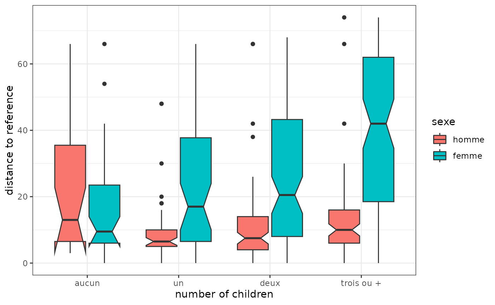
Inter or intra-group distances
We compare the distances between female trajectories and the distances between male trajectories. The male trajectories are clearly more homogeneous or, to put it another way, the female trajectories are more diverse.
# intra-cluster distances by gender
sapply(levels(socdem$sexe), function(x) round(mean(dissim[socdem$sexe==x,socdem$sexe==x]),1))homme femme
18.8 38.1 The distance matrix between trajectories can be summarised graphically from a multidimensional scaling (MDS). Here we represent the cloud of individuals in the plane formed by the first two dimensions, by colouring the points according to their cluster, then we project the gender as an additional variable. We observe, for example, that, on the first dimension, clusters 1 and 2 are opposed to each other, and that men are on the side of clusters 1 and 2.
mds <- cmdscale(dissim, k=2)
plot(mds, type='n', xlab="axe 1", ylab="axe 2")
abline(h=0, v=0, lty=2, col='lightgray')
points(mds, pch=20, col=part)
legend('topleft', paste('cluster',1:nbcl), pch=20, col=1:nbcl, cex=0.8)
text(aggregate(mds, list(socdem$sexe), mean)[,-1], levels(socdem$sexe), col='orange', cex=1, font=2)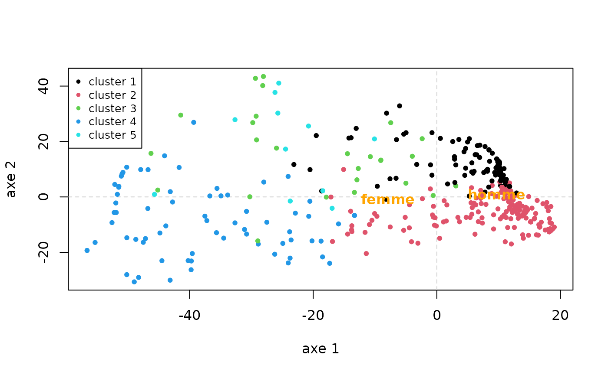
Synthetic indicators
We can study the distribution of indicators synthesising trajectories according to other characteristics of individuals. For example, the time spent in the different states according to gender: the weight of inactivity in women’s trajectories can be seen.
# durations in states by gender
dur <- seqistatd(seqact)
durees_sexe <- aggregate(dur, by=list(socdem$sexe), function(x) round(mean(x),1))
rownames(durees_sexe) <- NULL
colnames(durees_sexe) <- c("cluster",labs)
durees_sexe cluster studies full-time part-time short jobs inactivity military
1 homme 5.5 27.7 0.4 1.2 0.9 1.3
2 femme 5.6 19.8 2.3 1.6 7.7 0.0We now give an example of an indicator of trajectory complexity, turbulence, crossed with the year of birth. No noticeable change is observed.
# turbulence
turbu <- aggregate(seqST(seqact), list(socdem$annais), mean)
plot(turbu, type='l', ylim=c(0,10), xlab='Birth year')Other indicators of the complexity of trajectories can be easily
calculated: complexity index (function seqici), individual
entropy (function seqient), number of transitions (function
seqtransn).
Analysis of variance
With a single explanatory variable, we measure the share of the variance (or discrepancy) of dissimilarities explained by the variable (using a pseudo-R2), as well as a measure of the variability of trajectories for each of the categories of the variable, i.e. in each sub-population. In our example, gender explains 7.4% of the variance of the distances between employment trajectories (see pseudo R2 in the Test values section), and the variability of trajectories is significantly higher for women than for men (19.1 versus 9.4, see Discrepancy per level section).
# analysis of variance, with gender as factor
dissassoc(dissim, socdem$sexe)Pseudo ANOVA table:
SS df MSE
Exp 591.0611 1 591.06114
Res 7347.0429 498 14.75310
Total 7938.1040 499 15.90802
Test values (p-values based on 1000 permutation):
t0 p.value
Pseudo F 40.06352676 0.001
Pseudo Fbf 42.94304887 0.001
Pseudo R2 0.07445873 0.001
Bartlett 29.68308216 0.001
Levene 123.83930458 0.001
Inconclusive intervals:
0.00383 < 0.01 < 0.0162
0.03649 < 0.05 < 0.0635
Discrepancy per level:
n discrepancy
homme 226 9.383918
femme 274 19.074005
Total 500 15.876208It is possible to detail these indicators for each position in time of the trajectories. Thus, the share of variance explained by gender is almost nil at the beginning of the trajectory, then increases sharply between the ages of 18 and around 30 (it is 14% at that time), then decreases to only 5% at the age of 50.
# analysis of variance for each position in time
diff <- seqdiff(seqact, group=socdem$sexe)
rownames(diff$stat) <- rownames(diff$discrepancy) <- 14:49
plot(diff, stat="Pseudo R2")The variability of women’s and men’s trajectories is low at the beginning of the trajectory and increases until the age of 21. The results then diverge according to gender: the variability of women’s trajectories is maintained until the age of 50, while that of men decreases sharply after the age of 21 and reaches a very low level between the ages of 30 and 50.
pal <- brewer.pal(ncol(diff$discrepancy), "Set2")
plot(diff, stat="discrepancy", legend.pos=NA, col=pal, lwd=1.5)
legend('topright', fill=pal, legend=colnames(diff$discrepancy), cex=0.7)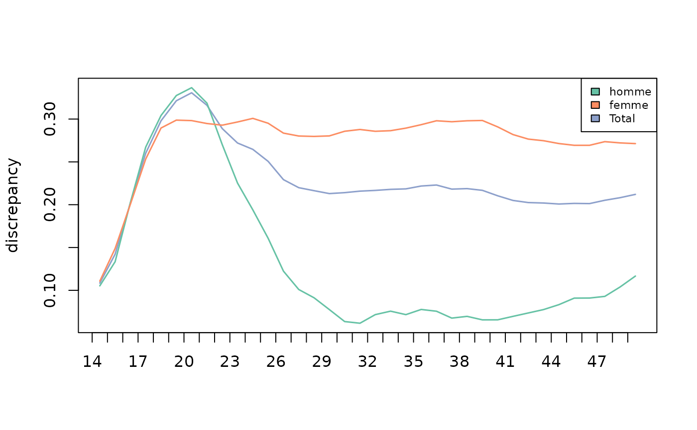
With several explanatory variables, we obtain the share of variance explained by all the variables and the decomposition of this share between the variables. Here, year of birth, gender, level of education and number of children together explain 16.2% of the variance of the dissimilarities between employment trajectories: 7.7% for gender, 6.0% for education, 2.1% for number of children and 0.3% for year of birth.
# analysis of variance with multiple factors
dissmfacw(dissim ~ annais+nbenf+sexe+diplome, data=socdem) Variable PseudoF PseudoR2 p_value
1 annais 1.939020 0.003308502 0.032
2 nbenf 4.147849 0.021232117 0.001
3 sexe 45.251273 0.077211134 0.001
4 diplome 11.654366 0.059656674 0.001
5 Total 11.883983 0.162218781 0.001
Inconclusive intervals:
0.00383 < 0.01 < 0.0162
0.03649 < 0.05 < 0.0635 Finally, the analysis of variance can be used to build a decision tree, also known as an induction tree.
# induction tree
arbre <- seqtree(seqact ~ annais+nbenf+sexe+diplome, data=socdem, diss=dissim, min.size=0.1, max.depth=3)The tree can be presented in textual or graphic form. Note that the
graphical representation requires the installation of the GraphViz
software (see the help of the seqtreedisplay function).
As before, it can be seen that the variable that explains the largest share of variance in the dissimilarities is gender. Next, for women, the most discriminating variable is the number of children and, more specifically, whether or not they have three or more children. Inactivity and, secondarily, part-time work are more present in the trajectories of women with at least three children than in those of others. For men, on the other hand, it is the level of education that is the most discriminating factor (men enter the labour market later when they have a diploma higher than or equal to the baccalaureat).
# tree results in textual form
print(arbre)Dissimilarity tree:
Parameters: min.size=50, max.depth=3, R=1000, pval=0.01
Formula: seqact ~ annais + nbenf + sexe + diplome
Global R2: 0.12934
Fitted tree:
|-- Root (n: 500 disc: 15.876)
|-> sexe 0.074459
|-- [ homme ] (n: 226 disc: 9.3839)
|-> diplome 0.093027
|-- [ aucun,<bac ] (n: 131 disc: 8.5907)[(1,4)-(2,3)-(6,1)-(2,29)] *
|-- [ bac,>bac ] (n: 95 disc: 8.401)[(1,9)-(2,28)] *
|-- [ femme ] (n: 274 disc: 19.074)
|-> nbenf 0.045614
|-- [ trois ou + ] (n: 86 disc: 21.168)[(1,4)-(2,10)-(5,13)-(2,10)] *
|-- [ aucun,un,deux ] (n: 188 disc: 16.848)[(1,6)-(2,31)] *
# tree results in graphic form
seqtreedisplay(arbre,type="d",border=NA,show.depth=TRUE)
Implicative statistics
To study how trajectories differ between several sub-populations, Studer proposes to use implicative statistics. This involves reconstructing, for each population, the sequence of typical states (Studer, 2012; Struffolino et al, 2016).
Here, military service is typical of men’s trajectories around the age of 20, followed by full-time employment from the age of 25 onwards. Inactivity is typical of women’s trajectories, from the age of 18 onwards. Part-time employment is also characteristic, but less markedly so from the age of 30 onwards.
# implicative statistics
implic <- seqimplic(seqact, group=socdem$sexe)
# par(mar=c(2,2,2,2))
plot(implic, xtlab=14:50, lwd=2, conf.level=c(0.95, 0.99), cex.legend=0.7)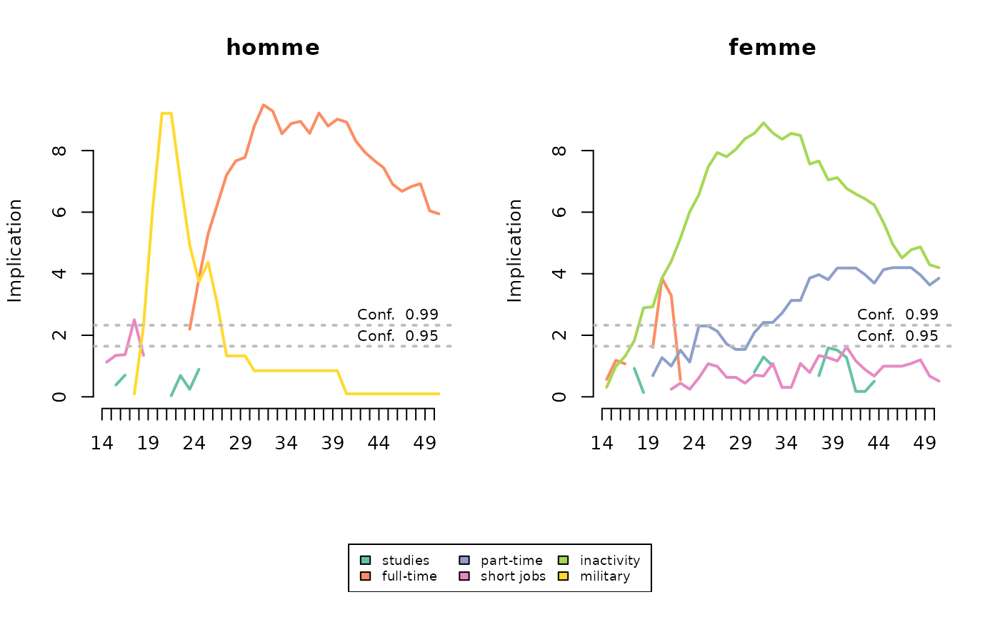
Multidimensional sequence analysis
Getting started
We begin by loading the data corresponding to three dimensions of the trajectories of 500 individuals drawn at random in the Biographies and entourage survey - matrimonial, parental and residential - and observed between the ages of 14 and 35.
data(seqmsa)
trajmat <- seqmsa %>% select(starts_with('smat'))
str(trajmat)'data.frame': 500 obs. of 22 variables:
$ smat14: num 1 1 1 1 1 1 1 1 1 1 ...
$ smat15: num 1 1 1 1 1 1 1 1 1 1 ...
$ smat16: num 1 1 1 1 1 1 1 1 1 1 ...
$ smat17: num 1 1 1 1 1 1 1 1 1 1 ...
$ smat18: num 1 1 1 1 1 1 1 1 1 1 ...
$ smat19: num 1 1 1 1 1 1 1 1 1 1 ...
$ smat20: num 1 3 1 1 3 1 1 1 1 1 ...
$ smat21: num 1 3 1 1 3 3 1 3 1 1 ...
$ smat22: num 1 3 1 3 3 3 1 3 1 1 ...
$ smat23: num 1 3 1 3 3 3 1 3 1 1 ...
$ smat24: num 1 3 1 3 3 3 1 3 1 1 ...
$ smat25: num 1 3 3 3 3 3 1 3 2 1 ...
$ smat26: num 2 3 3 3 3 3 1 3 2 1 ...
$ smat27: num 2 3 3 3 3 3 1 3 2 1 ...
$ smat28: num 2 3 3 3 3 3 1 3 3 1 ...
$ smat29: num 2 3 3 3 3 3 1 3 3 1 ...
$ smat30: num 2 3 3 3 3 3 1 3 3 1 ...
$ smat31: num 3 3 3 3 3 3 1 3 3 1 ...
$ smat32: num 3 3 3 3 2 3 1 3 3 1 ...
$ smat33: num 3 3 3 3 2 3 3 3 3 1 ...
$ smat34: num 3 3 3 3 2 3 3 3 3 1 ...
$ smat35: num 3 3 3 3 2 3 3 3 3 1 ...
trajenf <- seqmsa %>% select(starts_with('nenf'))
str(trajenf)'data.frame': 500 obs. of 22 variables:
$ nenf14: num 0 0 0 0 0 0 0 0 0 0 ...
$ nenf15: num 0 0 0 0 0 0 0 0 0 0 ...
$ nenf16: num 0 0 0 0 0 0 0 0 0 0 ...
$ nenf17: num 0 0 0 0 0 0 0 0 0 0 ...
$ nenf18: num 0 0 0 0 0 0 0 0 0 0 ...
$ nenf19: num 0 0 0 0 0 0 0 0 0 0 ...
$ nenf20: num 0 0 0 0 1 0 0 0 0 0 ...
$ nenf21: num 0 1 0 0 1 0 0 0 0 0 ...
$ nenf22: num 0 1 0 0 1 0 0 0 0 0 ...
$ nenf23: num 0 1 0 0 1 0 0 0 0 0 ...
$ nenf24: num 0 1 0 0 1 1 0 0 0 0 ...
$ nenf25: num 0 1 0 1 1 1 0 1 0 0 ...
$ nenf26: num 0 1 0 1 1 1 0 1 2 0 ...
$ nenf27: num 0 1 0 1 1 1 0 1 2 0 ...
$ nenf28: num 0 1 1 1 1 1 0 2 3 0 ...
$ nenf29: num 0 2 1 2 1 1 0 2 3 0 ...
$ nenf30: num 0 2 2 2 1 1 0 3 3 0 ...
$ nenf31: num 1 2 2 2 1 1 0 3 3 0 ...
$ nenf32: num 1 2 2 2 1 1 0 3 3 0 ...
$ nenf33: num 1 2 2 2 2 1 0 3 3 0 ...
$ nenf34: num 1 2 2 2 2 1 0 3 3 0 ...
$ nenf35: num 1 2 2 2 2 1 0 3 3 0 ...
trajlog <- seqmsa %>% select(starts_with('slog'))
str(trajlog)'data.frame': 500 obs. of 22 variables:
$ slog14: num 0 0 0 0 0 0 0 0 0 0 ...
$ slog15: num 0 0 0 0 0 0 0 0 0 0 ...
$ slog16: num 0 0 0 0 0 0 0 0 0 0 ...
$ slog17: num 0 0 0 0 0 0 0 0 1 0 ...
$ slog18: num 0 0 0 0 0 0 0 0 1 0 ...
$ slog19: num 0 0 0 0 0 1 0 0 1 0 ...
$ slog20: num 0 0 0 0 1 1 0 0 0 0 ...
$ slog21: num 0 0 0 0 1 0 0 0 0 0 ...
$ slog22: num 0 1 0 1 1 0 0 0 1 0 ...
$ slog23: num 0 1 0 1 1 1 0 1 1 0 ...
$ slog24: num 0 1 0 1 1 1 0 1 1 0 ...
$ slog25: num 0 1 1 1 1 1 0 1 1 0 ...
$ slog26: num 1 1 1 1 1 1 0 1 1 0 ...
$ slog27: num 1 1 1 1 1 1 0 1 1 1 ...
$ slog28: num 1 1 1 1 1 1 0 1 1 1 ...
$ slog29: num 1 1 1 1 1 1 0 1 1 1 ...
$ slog30: num 1 1 1 1 1 1 0 1 1 1 ...
$ slog31: num 1 1 1 1 1 1 0 1 1 1 ...
$ slog32: num 1 1 1 1 1 1 0 1 1 1 ...
$ slog33: num 1 1 1 1 1 1 0 1 1 1 ...
$ slog34: num 1 1 1 1 1 1 0 1 1 1 ...
$ slog35: num 1 1 1 1 1 1 1 1 1 1 ...Three sequence objects (one per dimension) are then defined.
# definition of matrimonial trajectories
labs <- c("never","unmarried couple","married","separated")
palette <- brewer.pal(length(labs), 'Set2')
seqmat <- seqdef(trajmat, labels=labs, cpal=palette)
# definition of parental trajectories
labs <- c("0","1","2","3+")
palette <- brewer.pal(length(labs), 'YlOrRd')
seqenf <- seqdef(trajenf, labels=labs, cpal=palette)
# definition of residential independence trajectories
labs <- c("non indep","indep")
palette <- brewer.pal(3, 'Set1')[1:2]
seqlog <- seqdef(trajlog, labels=labs, cpal=palette)Association between dimensions
The distance matrix of each dimension is calculated using Optimal Matching (unique substitution cost equal to 2, indel cost of 1.5).
# distance matrices of the 3 dimensions
dmat <- seqdist(seqmat, method="OM", indel=1.5, sm=seqsubm(seqmat,"CONSTANT",cval=2))
denf <- seqdist(seqenf, method="OM", indel=1.5, sm=seqsubm(seqenf,"CONSTANT",cval=2))
dlog <- seqdist(seqlog, method="OM", indel=1.5, sm=seqsubm(seqlog,"CONSTANT",cval=2))A distance matrix is also calculated from a multiple sequence analysis (also called “multichannel sequence analysis”). It is decided here to keep the same costs for each of the dimensions, but this is not mandatory.
# distance matrix for multidimensional sequences
dissim.MSA <- seqdistmc(list(seqmat,seqenf,seqlog), method="OM", indel=1.5, sm=as.list(rep("CONSTANT",3)), cval=2)The extent to which the different dimensions are interrelated is then investigated, which can be achieved in a number of ways (Piccarreta, 2017). From the correlations, we see that the residential dimension (“log”) is least related to the distance matrix between multiple sequences (here called “jsa” for Joint Sequence Analysis). It is moreover very little associated with the parental dimension (“enf”). The matrimonial (“mat”) and parental dimensions are the most related. Cronbach’s alpha examination confirms these results.
asso <- assoc.domains(list(dmat,denf,dlog), c('mat','enf','log'), dissim.MSA)
asso$correlations
$correlations$pearson
mat enf log jsa
mat 1.000 0.372 0.275 0.797
enf 0.372 1.000 0.090 0.702
log 0.275 0.090 1.000 0.604
jsa 0.797 0.702 0.604 1.000
$correlations$spearman
mat enf log jsa
mat 1.000 0.370 0.280 0.794
enf 0.370 1.000 0.096 0.705
log 0.280 0.096 1.000 0.565
jsa 0.794 0.705 0.565 1.000
$`mean squared correlations`
$`mean squared correlations`$pearson
[1] 0.498
$`mean squared correlations`$spearman
[1] 0.483
$`Cronbach's alpha`
$`Cronbach's alpha`$`(mat,enf,log)`
[1] 0.494
$`Cronbach's alpha`$`(mat,enf)`
[1] 0.542
$`Cronbach's alpha`$`(mat,log)`
[1] 0.431
$`Cronbach's alpha`$`(enf,log)`
[1] 0.166An idea of the structure of associations across dimensions can still be gained by carrying out a Principal Component Analysis (PCA) of the matrix of correlations between dimensions.
# PCA of the matrix of correlations between dimensions
matcor <- asso$correlations$pearson[1:3,1:3]
PCA <- PCA(matcor, scale.unit=F, graph=F)
plot.PCA(PCA, choix='varcor')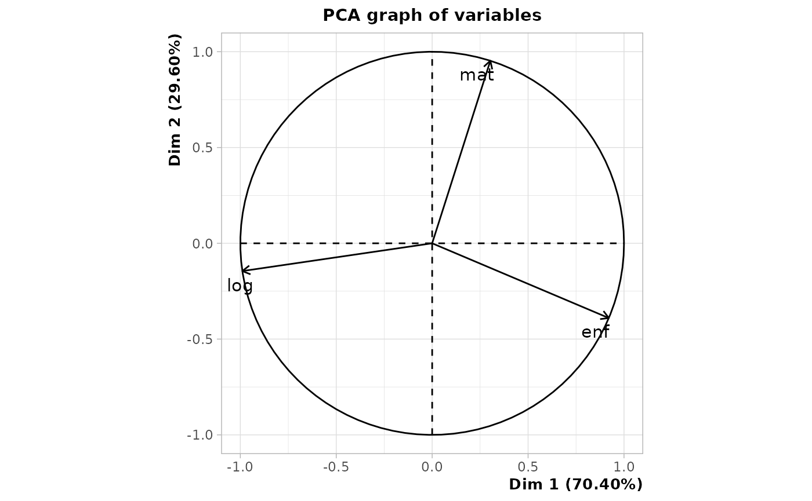
Several distance matrices between multiple sequences are then calculated by excluding one of the dimensions at each one.
dnolog <- seqdistmc(list(seqmat,seqenf), method="OM", indel=1.5, sm=as.list(rep("CONSTANT",2)), cval=2)
dnomat <- seqdistmc(list(seqenf,seqlog), method="OM", indel=1.5, sm=as.list(rep("CONSTANT",2)), cval=2)
dnoenf <- seqdistmc(list(seqmat,seqlog), method="OM", indel=1.5, sm=as.list(rep("CONSTANT",2)), cval=2)
dnolog <- as.numeric(as.dist(dnolog))
dnomat <- as.numeric(as.dist(dnomat))
dnoenf <- as.numeric(as.dist(dnoenf))We then examine, for each dimension, the correlation between its distance matrix and the distance matrix between multiple sequences excluding that dimension. Once again, we see that it is the residential dimension that is least associated with the others.
[1] 0.418[1] 0.304[1] 0.216A final option is to sort the index plots of all dimensions according to the results of a multidimensional scaling (MDS) performed for a single dimension (Piccarreta & Lior, 2010). Here, the sequences are sorted from an MDS of the matrimonial dimension. The order of the sequences of the other two dimensions seems to follow an interpretable logic, so we can consider that the dimensions are sufficiently related to each other to justify an analysis of multiple sequences.
mds.msa <- cmdscale(dmat,k=1)
par(mfrow=c(3,2), mar=c(2.1,2.1,2.1,2.1))
seqIplot(seqmat, sortv=mds.msa, xtlab=14:35, with.legend=FALSE, yaxis=FALSE, ylab="")
seqlegend(seqmat, cex=0.7)
seqIplot(seqenf, sortv=mds.msa, xtlab=14:35, with.legend=FALSE, yaxis=FALSE, ylab="")
seqlegend(seqenf, cex=0.7)
seqIplot(seqlog, sortv=mds.msa, xtlab=14:35, with.legend=FALSE, yaxis=FALSE, ylab="")
seqlegend(seqlog, cex=0.7)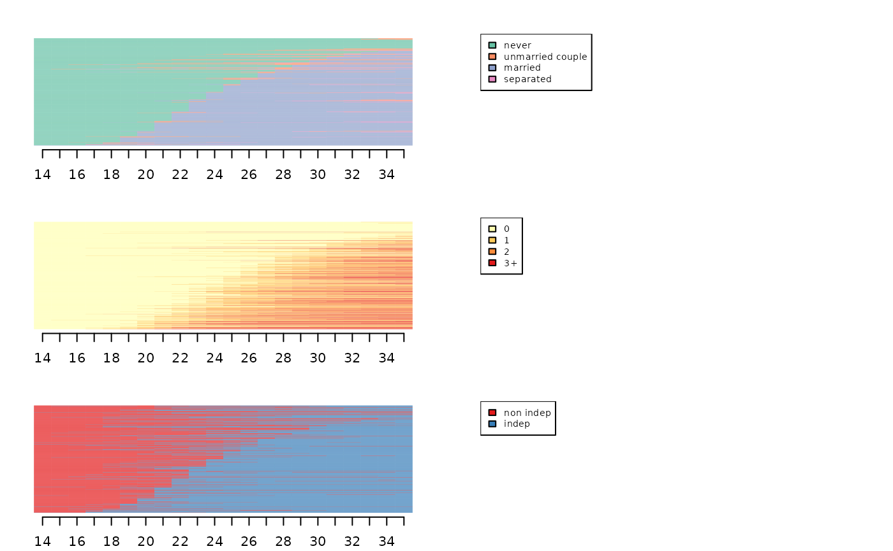
Typology of sequences via Multidimensional Sequence Analysis (MSA)
To obtain a typology, an HAC is made from the distance matrix resulting from the multiple sequence analysis.
# hierarchical agglomerative clustering
agnes.MSA <- agnes(as.dist(dissim.MSA), method="ward", keep.diss=FALSE)
plot(as.dendrogram(agnes.MSA), leaflab="none")We opt for a typology in 5 classes.
To obtain the state distribution plots of the clusters of the typology (one graph per cluster and per dimension) :
# state distribution plots of the typology
par(mfrow=c(3,nbcl.MSA+1), mar=c(2.5, 2.1, 2.1, 2.1))
for(i in 1:nbcl.MSA) seqdplot(seqmat[part.MSA==i,], xtlab=14:35, border=NA, with.legend=FALSE, main=paste('cluster',i))
seqlegend(seqmat, cex=0.5)
for(i in 1:nbcl.MSA) seqdplot(seqenf[part.MSA==i,], xtlab=14:35, border=NA, with.legend=FALSE)
seqlegend(seqenf, cex=0.5)
for(i in 1:nbcl.MSA) seqdplot(seqlog[part.MSA==i,], xtlab=14:35, border=NA, with.legend=FALSE)
seqlegend(seqlog, cex=0.5)Typology of sequences via Globally Interdependent Multiple Sequence Analysis (GIMSA)
An alternative to multiple sequence analysis is Globally Interdependent Multiple Sequence Analysis (GIMSA, see Robette et al, 2015).
First the data is loaded and coded in sequence. The sequences are : - 400 occupational trajectories of mothers, observed between 14 and 60 years old with the following states: independent, medium/upper socio-professional category, popular socio-professional category, inactivity, studies. - 400 employment trajectories of their daughters, observed during the first 15 years after the end of their studies, with the following states: studies, inactivity, part-time, full-time.
# loading the data
data(seqgimsa)
trajfilles <- seqgimsa %>% select(starts_with('f'))
str(trajfilles)'data.frame': 400 obs. of 15 variables:
$ f1 : num 4 4 4 4 3 4 4 4 4 4 ...
$ f2 : num 4 4 4 4 4 4 4 4 4 4 ...
$ f3 : num 4 4 4 4 4 4 4 4 4 2 ...
$ f4 : num 4 4 4 4 4 4 4 4 4 2 ...
$ f5 : num 4 4 4 4 4 4 4 2 4 2 ...
$ f6 : num 4 4 4 4 4 4 4 2 4 2 ...
$ f7 : num 4 4 4 4 4 4 4 2 4 2 ...
$ f8 : num 4 4 4 2 4 4 4 2 4 2 ...
$ f9 : num 4 4 4 4 4 4 4 2 4 2 ...
$ f10: num 4 4 4 4 4 4 4 2 4 2 ...
$ f11: num 4 4 4 4 4 4 4 2 4 2 ...
$ f12: num 4 4 4 4 4 4 4 2 4 2 ...
$ f13: num 4 4 4 4 4 4 4 2 4 2 ...
$ f14: num 4 4 4 4 4 4 4 2 4 2 ...
$ f15: num 4 4 4 4 4 4 4 2 4 2 ...
trajmeres <- seqgimsa %>% select(starts_with('m'))
str(trajmeres)'data.frame': 400 obs. of 47 variables:
$ m14: num 5 5 9 9 8 8 9 9 9 9 ...
$ m15: num 5 5 9 9 8 8 9 9 9 9 ...
$ m16: num 5 5 9 9 8 8 9 9 9 9 ...
$ m17: num 5 5 9 9 8 8 9 9 9 9 ...
$ m18: num 5 5 9 3 8 8 9 9 3 5 ...
$ m19: num 5 5 9 3 8 8 9 9 3 5 ...
$ m20: num 5 5 9 3 8 8 9 9 3 5 ...
$ m21: num 5 5 9 3 8 8 9 5 3 5 ...
$ m22: num 5 5 9 3 8 8 9 5 3 5 ...
$ m23: num 5 5 9 3 8 8 9 5 3 5 ...
$ m24: num 5 5 9 3 8 8 9 5 3 8 ...
$ m25: num 5 5 9 3 8 8 1 5 3 8 ...
$ m26: num 5 5 9 3 8 8 1 5 3 8 ...
$ m27: num 5 5 9 3 8 8 1 5 3 8 ...
$ m28: num 5 5 9 3 8 8 1 5 3 8 ...
$ m29: num 5 5 9 3 8 8 1 5 3 8 ...
$ m30: num 5 5 9 8 8 8 1 5 3 8 ...
$ m31: num 5 5 9 8 8 8 1 5 3 8 ...
$ m32: num 5 5 9 8 8 8 1 5 3 8 ...
$ m33: num 5 5 9 8 8 8 1 5 3 8 ...
$ m34: num 5 5 8 8 8 8 1 5 3 8 ...
$ m35: num 5 5 8 8 8 8 1 5 3 8 ...
$ m36: num 5 5 8 8 8 8 1 5 3 8 ...
$ m37: num 5 5 8 8 8 8 1 5 3 8 ...
$ m38: num 5 5 8 8 8 8 1 5 3 8 ...
$ m39: num 5 5 8 8 8 8 1 5 3 8 ...
$ m40: num 5 5 8 8 8 8 1 5 3 8 ...
$ m41: num 5 5 5 8 8 8 1 5 3 8 ...
$ m42: num 5 5 5 8 8 8 1 5 3 8 ...
$ m43: num 5 5 5 8 8 8 1 5 3 8 ...
$ m44: num 5 5 5 8 8 8 1 5 3 8 ...
$ m45: num 5 5 5 8 8 8 1 5 3 8 ...
$ m46: num 5 5 5 8 8 8 1 5 3 8 ...
$ m47: num 5 5 5 8 8 8 1 5 3 8 ...
$ m48: num 5 5 5 8 8 8 1 5 3 8 ...
$ m49: num 8 5 5 9 8 8 1 5 3 8 ...
$ m50: num 8 5 5 9 8 8 1 5 3 8 ...
$ m51: num 8 5 5 9 8 8 1 5 3 8 ...
$ m52: num 8 5 5 9 8 8 1 5 3 8 ...
$ m53: num 8 5 5 9 8 8 1 5 8 8 ...
$ m54: num 8 5 5 9 8 8 1 5 8 8 ...
$ m55: num 8 5 5 9 8 8 1 5 8 8 ...
$ m56: num 8 5 5 9 8 8 1 5 8 8 ...
$ m57: num 8 5 5 9 8 8 1 5 8 8 ...
$ m58: num 8 5 5 9 8 8 1 5 8 8 ...
$ m59: num 8 5 5 9 8 8 1 5 8 8 ...
$ m60: num 8 8 5 9 8 8 1 8 8 8 ...
# definition of the sequences
lab.meres <- c("indep","medium/upper","popu","inactivity","studies")
pal.meres <- brewer.pal(5, "Set1")
seqmeres <- seqdef(trajmeres,lab=lab.meres, cpal=pal.meres)
lab.filles <- c("studies","inactivity","part-time","full-time")
pal.meres <- brewer.pal(4, "Set1")
seqfilles <- seqdef(trajfilles,lab=lab.filles, cpla=pal.filles)The first step is to calculate a distance matrix for mothers and one for daughters. The LCS metric is used for mothers and the Hamming distance for daughters.
# step 1 : dissimilarity measure
dmeres <- seqdist(seqmeres,method="LCS")
cout.filles <- seqsubm(seqfilles, method="CONSTANT", cval=2)
dfilles <- seqdist(seqfilles, method="HAM", sm=cout.filles)In the second step, the distance matrices are summarised from an MDS.
# step 2 : multidimensional scaling
mds.meres <- cmdscale(dmeres, k=20, eig=TRUE)
mds.filles <- cmdscale(dfilles, k=20, eig=TRUE)The number of dimensions to be retained for each of the MDSs is selected.
# choosing the numbers of dimensions to retain for mothers
par(mfrow=c(1,2))
# stress measure
seqmds.stress(dmeres, mds.meres) %>% plot(type='l', xlab='number of dimensions', ylab='stress')
# share of variance explained
(mds.meres$eig[1:10]/mds.meres$eig[1]) %>% plot(type='s', xlab='number of dimensions', ylab='share of variance explained')
# choosing the numbers of dimensions to retain for daughters
par(mfrow=c(1,2))
# stress measure
seqmds.stress(dfilles, mds.filles) %>% plot(type='l', xlab='number of dimensions', ylab='stress')
# share of variance explained
(mds.filles$eig[1:10]/mds.filles$eig[1]) %>% plot(type='s', xlab='number of dimensions', ylab='share of variance explained')In the third step, the relationships between the results of the mothers’ MDS and those of the daughters’ MDS are summarised using a symmetric PLS.
# step 3 : symmetric PLS
a <- mds.meres$points[,1:5]
b <- mds.filles$points[,1:4]
pls <- symPLS(a,b)In the fourth and final step, a single distance matrix is calculated between the dyads of mother-daughter trajectories. It is possible to weight the dimensions of mothers and daughters to balance their contribution to the final results.
# step : distance and clustering
# no weighting
F <- pls$F
G <- pls$G
# weighting by variance of PLS dimensions (w1)
F <- apply(pls$F,2,scale,center=FALSE)
G <- apply(pls$G,2,scale,center=FALSE)
# weighting by number of distinct sequences (w2)
F <- pls$F/nrow(seqtab(seqmeres,tlim=0))
G <- pls$G/nrow(seqtab(seqfilles,tlim=0))
# weighting by 1st MDS eigenvalue (w3)
F <- pls$F/mds.meres$eig[1]
G <- pls$G/mds.filles$eig[1]The w1 weighting is used here.
# weighting by variance of PLS dimensions (w1)
F <- apply(pls$F,2,scale,center=FALSE)
G <- apply(pls$G,2,scale,center=FALSE)
# distance computation
diff2 <- function(X) return(as.matrix(dist(X,upper=T,diag=T)^2,nrow=nrow(X)))
D <- (diff2(F)+diff2(G))^0.5A clustering procedure is then carried out (here a HAC).
# clustering
dist.GIMSA <- as.dist(D)
agnes.GIMSA <- agnes(dist.GIMSA, method="ward", keep.diss=FALSE)
plot(as.dendrogram(agnes.GIMSA), leaflab="none")A partition is chosen in 5 clusters.
Finally, the typology is represented graphically with the help of state distribution plots.
par(mfrow=c(3,nbcl.GIMSA), mar=c(2.5, 2.1, 2.1, 2.1))
for(i in 1:nbcl.GIMSA) seqdplot(seqmeres[part.GIMSA==i,], xtlab=14:60, border=NA, with.legend=FALSE, main=paste('cluster',i))
for(i in 1:nbcl.GIMSA) seqdplot(seqfilles[part.GIMSA==i,], xtlab=1:15, border=NA, with.legend=FALSE)
seqlegend(seqmeres, cex=0.6)
seqlegend(seqfilles, cex=0.6)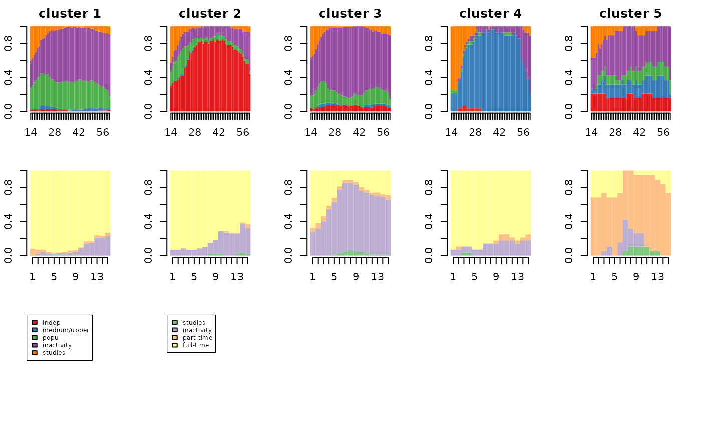